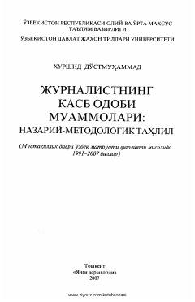

JKOʻzbek jurnalistikasida kasb odobi va axborot erkinligi masalalariga bagʻishlangan ilmiy monografiya.
Ushbu monografiya oʻzbek jurnalistikasida kasb odobi muammolarini nazariy va metodologik jihatdan tahlil qiladi. Kitobda mustaqillik davri matbuoti misolida axborot erkinligi, masʼuliyat va milliy qadriyatlar oʻrtasidagi muvozanat masalalari yoritilgan.